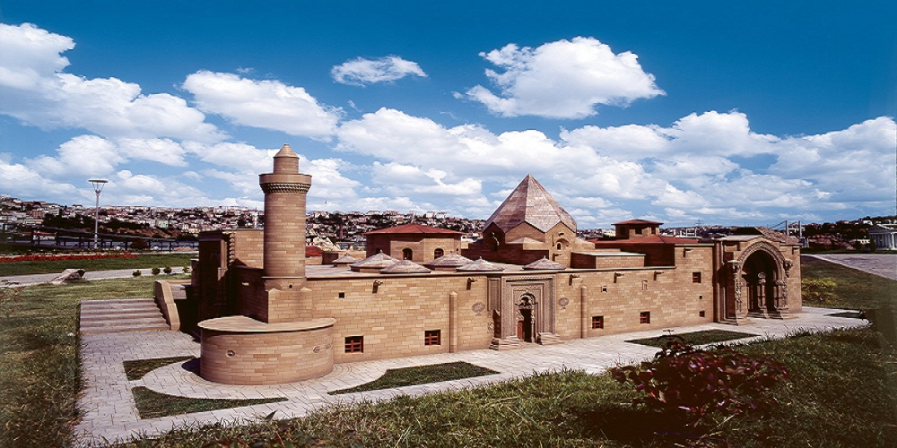

Sivas iç Anadolu’nun doğusunda yer alan, Mezopotamya’dan gelen kervanların geçtiği tarihi ipek Yolu üzerinde yer alması nedeniyle tarihte önemli bir yeri olan ve ünlü Kral Yolu’nun da geçtiği büyük bir şehirdir. Sivas’ın 2019 nüfusu, tahmini verilere göre 647.784. Ayrıca Sivas, Türkiye’nin yüzölçümü açsından en büyük ikinci ilidir. Bu nedenle Sivas tarihi zenginliklerinin yanında, doğal güzellikleri ve kaplıcalarıyla ziyaretçilerine farklı tatil olanakları sunmaktadır. Sivas tarih boyunca Anadolu’nun en önemli şehirlerinden biri olması nedeniyle kentin merkezinde yer alan tarihi eserleri mutlaka görmek gerekir. Günümüzde de tarihin izlerini taşımaya devam eden bu şehir, özellikle Selçuklular dönemine ait önemli eserlere ev sahipliği yapmaktadır.


Gezilecek Yerler
Divriği Ulu Camii
Divriği ve civarında en erken yerleşim Hititler Dönemi'ne kadar inmektedir. Cami yöre Mengücekoğulları’nın yönetimi altında olduğu dönemde Ahmet Şah ve eşi Turan Melek tarafından camisi ile birlikte 1228-1229 yıllarında yaptırılmıştır. İslam mimarisinin bu başyapıtı iki kubbeli türbeye sahip bir cami ve ona bitişik bir hastaneden oluşmaktadır. Yapılar, mimari özelliklerinin yanı sıra, sergilediği zengin Anadolu geleneksel taş işçiliği örnekleriyle UNESCO Dünya Miras Listesi'nde yer almaktadır. Divriği Ulu Cami ve Darüşşifası Türkiye’nin bu listeye giren ilk mimari yapısıdır.
Mimarı Ahlatlı Hürremşah’ın elinde 1228 yılında şekil alan Divriği Ulu Cami, plan tipi ve süsleme özellikleri bakımından benzeri olmayan bir eserdir. Camiye bitişik olarak inşa edilen iki katlı, avlulu ve eyvanlı bir yapı olan Darüşşifa, hastaların su sesi ile sağlıklarına kavuştuğu bir hastane olarak benzersiz özelliklere sahiptir. Ulu Cami ve Darüşşifa, dıştan yalın bir mimari görünüme sahiptir. Ancak Darüşşifa Taç Kapısı, Cami Kuzey Taç Kapısı, Cami Batı Taç Kapısı ve Şah Mahfili Taç Kapısı'nın her biri birbirinden farklı eşsiz bezemeleri ile göz kamaştıran birer mimarlık ve mühendislik harikası niteliğindedir.


Kangal Balıklı Kaplıca
Kaplıca suyu aslında belirli bir kaynak noktasından çok, kum taşları arasından yaygın olarak yüzeye çıkmakta ve dere kenarı boyunca sızıntılar oluşmaktadır. 1917 yılında sazlık bir alan olan kaplıca, 1966 yılında dört adet havuz ve iki katlı 16 odalı bir motel ile hizmete açılmıştır.Günümüzde ise dört kısım otel, altı havuz, 16 adet özel banyo, lokanta , market ve çay bahçesi hizmet vermektedir. Kangal balıklı kaplıca, ülkemizde deri hastalıklarından; Sedef Hastalığı (Psoriasis) Ve romatizmal hastalıkların tedavisinde ün yapmış bir kaplıcadır. Bu kaplıcamızın önemi; suyun kimyasal özelliklerinden ve içinde yaşayan balıklardan ileri gelmektedir. Kaplıca suyunun 35+ 0.5 olması ve kimyasal içeriği nedeniyle çeşitli hastalıkları tedavi edici yöre halkı tarafından bilinmekte olup, bu tedavi özelliğinin tüm ülke ve dünya geneline yaygınlaştırılmasına çalışılmaktadır. Diğer taraftan kaplıca suyunda yaşayan balıkların insan vücuduna saldırırcasına gelmeleri hastalıkların bu balıkların iyileştirdiği düşüncesi de oldukça yaygındır. Kaplıcanın bu yönü araştırıcıları fi ziksel, kimyasal, jeolojik, biyolojik ve klinik bulgular elde etmeye yönlendirmiştir. Diğer taraftan pek çok cilt hastası ( Yurt içinden-Yurt dışından ) kaplıcaya gelmekte ve belirli sürelerle havuza girip 'Balık-Su' tedavisi gördükten sonra iyileştiklerini ifade etmektedirler. Kaplıcanın 2003 tarihinde Sağlık Bakanlığı Tarafından Sağlık tesisi olarak tescili yapılmıştır.

Gürün Gökpınar Gölü
Gökpınar Gölü tabii güzelliği bakımından Gürün’ün olduğu kadar ülkemizin de nadide yerlerinden biridir. İlçe merkezine 10 kilometre uzaklıktadır. Suyu tatlı, berrak ve temizdir. Öyle ki bazı kısımların derinliği 17-20 metreyi bulduğu halde içine atılan küçük bir cismin tabana kadar çöküşü ve tabandaki duruşu, net olarak izlenebilmektedir. Gölün diğer bir özelliği, güneşin açısına göre ton değiştirmesidir. Gölün rengi mavi-gök renginden olduğu için bu ad verilmiştir. Yaslandığı kayaların dibinden ve yer yer tabandan kaynayan göl, iki parçadan oluşmaktadır. Küçük Göl adı verilen gölden çıkan suda alabalık üretimi yapılmaktadır. Büyük Göl ise turistik amaçlarla ziyaret edilen bir konumdadır. Halk arasında Gökpınar’ın oluşumu ile ilgili olarak iki efsane anlatılmaktadır. Birincisine göre, “Bir çoban sürüsüyle birlikte gölün bulunduğu arazide dinlenirken rüyasında kendisine ‘Koyunların ile birlikte buradan uzaklaş, alttan su kaynayacak’ denir. Çoban uyandığı zaman aceleyle sürüyü alır ve karşı yamaca geçer. Gerçekten de bir süre sonra su kaynamaya başlar ve Gökpınar oluşur. İkincisine göre ise, “Çoban ve sürüsü şiddetli susuzluk çekmektedir. Oraya yakın bir çevrede su kaynağı yoktur. Çoban çaresiz bir şekilde ‘Ya Rabbi su’ diye inler ve elindeki asasını yere vurur. Bir süre sonra asanın değdiği yerden su kaynamaya başlar. Çoban ve koyunlar kana kana sularını içerler. Çıkan bu su, orada bir göl halini alır." Gölün suyu berrak ve gök mavisi olduğu için yöre halkı göle “Gökpınar” ismini verir. Rafting sporu ile ilgilenen insanlar için görülmeye değer harika bir yerdir. Gökpınar Gölü'nün alanı 3 bin metrekaredir. Doğal bir akvaryum görünümündedir. Suyu çok tatlı olup ve soğuktur. Gölün rengi mavi-gök renginden olduğu için bu adı almıştır. Biri büyük ve küçük olmak üzere iki tane göl mevcuttur. Gökpınar Gölü iç ve dış turizme hizmet vermektedir. Gökpınar Gölü ilçe merkezine 10 kilometre uzaklıktadır.
Atatürk Kongre Etnografya Müzesi
ivas Müze Müdürlüğü, Sivas Arkeoloji Müzesi, Atatürk ve Kongre Müzesi ve Aşık Veysel Müzesini bünyesinde barındırmaktadır. 4 Eylül 1881 tarihinde Müze-i Hümayun Müdürlüğüne atanan ve Türk Müzecilerinin dönemini başlatan Osman Hamdi Bey’in Vilayet Müzelerine önem verilmesi isteği doğrultusunda, Sivas’ta müzecilik fikri erken gelişmiştir. 1922 yılında başlatılan çalışmalar neticesi, Maarif Vekâleti ve Hars Müdürlüğünce toplanan eserler, Kongre Lisesinde bir araya getirilerek, 1923 yılında, gezilebilir düzeyde bir müze deposu oluşturulmuştur. Lise binasının yetersiz kalması sonucu 1927 yılında eserler Gökmedrese’ ye taşınarak daha iyi bir çalışma ortamı sağlanmış ve müze burada 1934 yılında ziyarete açılmıştır. 1967 yılında onarımı tamamlanan Selçuklu eseri Buruciye Medresesine taşınan Müze, bir yıl sonra 1968 tarihinde ziyarete açılmıştır. Uzun yıllar Buruciye Medresesinde hizmet veren Sivas Müzesi, 1990 yılından itibaren de Sivas Kongresi’nin yapıldığı “Sivas Atatürk-Kongre ve Etnografya Müzesi” olarak düzenlenen Tarihi Kongre Binası’nda hizmet vermiştir.

Geleneksel Mutfak
Sivas mutfağı söz konusu olduğunda yaz aylarında sofraları süsleyen yoğurtlu lezzetler, hasat sonrasında başlanan kış hazırlıkları, kışın yapılan yöresel çorbalar ve hamur işleri şehrin mutfağına oldukça çeşitlilik kazandırıyor. Et ve sebzenin aynı sofrada buluştuğu Sivas sofralarında oturmadan yörenin kültürel değerlerini anlamak pek mümkün olmayacaktır. Yolunuz Sivas’a düşerse şehrin yöresel tatlarını, baharatlarını ve soslarını denemeden geçmeyin.
Peskütan Çorbası
>Peskütan çorbası, yine Sivas yöresinde yoğurt ile yapılan lezzetlerden biridir. Bu çorbayı başka bir yerde denemeniz mümkün olmayabilir çünkü gerçek anlamda yöresel bir tarifi bulunuyor. Peskütan çorbası yoğurt ve yarmayı birlikte pişirerek elde edilen bir çorba. Genellikle kış aylarında yapılan bu çorbayı ilk bakışta yoğurt çorbasına benzetebilirsiniz ancak tat olarak biraz daha farklı olduğunu söyleyelim. Sivas restoranlarında ve çorbacılarında sıkça bulabileceğiniz bir lezzettir. Aslen Sivas yöresinde en sık yapılan çorbalardan biridir. Çorba kültürünün fazlasıyla geliştiği ülkemizde Peskütan çorbası özel bir tarife sahiptir. Sivas yöresel tatlarıyla şekillenen bu çorba sıcak biçimde tüketildiğinde daha da lezzetli olmaktadır. Sivas’a gelenlerin mutlaka tercih etmesi gereken bir çorbadır.


Sivas Köftesi
Sivas köftesi aslında diğer köftelere oranla çok da farklı bir tarif ile hazırlanmıyor. Diğer yörelerde hazırlanan köfteler ile neredeyse aynı tarife sahip olsa da tadının çok daha lezzetli olduğunu ilk denemenizde fark edebilirsiniz. Sivas köftesini bu kadar lezzetli yapan ise gerçek anlamda organik olmasıdır. Sivas’ta yapılan köfteler sadece Sivas’ta yetişen hayvanların etinden yapılıyor. Böylece organik olarak beslenen hayvanların etinden yapılmış bir köfte deneyimlemeniz olanaklı hale gelir. Her şeyin organik olanı çok daha lezzetli olur fikrinin ne kadar doğru olduğunu Sivas köftesi ile anlayabilirsiniz. Bu kadar yumuşak ve lezzetli bir eti her yerde denemeniz mümkün değil. Sivas’ta beslenen ve bakımı yapılan hayvanların etinden yapılmasıyla yöresel olarak anılan Sivas köftesi çeşitli restoran ve lokantalarda sunuma hazır hale getirilmektedir.

İçli Köfte
Bazı yörelerde yoğurtlu olarak tüketilen içli köftenin Sivas usulü olarak hazırlanması diğer yörelere oranla oldukça farklıdır. Kendine has bir aroması olduğu söylenebilir. Bu aromanın tadını başka içli köftelerde bulmanız da mümkün değil. Sivas’a özgü olarak hazırlanan tarifte içli köfte deneyimini farklı bir boyuta taşıyabilirsiniz. Sivas usulü olarak hazırlanan içli köfteler görece diğer içli köftelere oranla daha büyük ve top top şeklindedir. İçerisine yoğurt eklenmez. Sade tüketilen içli köfteleri çorbaların içerisinde de görmeniz mümkün değil. Kelimenin tam anlamı ile yöreye özel bir lezzet olduğunu söylemek gerekir. Köfte alışkanlığının çok fazla olduğu ülkemizde içli köfte hemen her bölgede yapılsa da Sivas’a özgü olan içli köftenin tadı bir başkadır. Sivas’a gelenlerin mutlaka içli köfte tadına bakması ve tarifini de alarak evlerinde denemesi gerekiyor.

Sivas Katmeri
Katmer, Sivas’ın en yağlı ve en lezzetli kahvaltılıklarından biridir. Sivas’a gittiğinizde mutlaka Sivas katmerini denemelisiniz çünkü yediğiniz diğer katmerlerden çok daha farklı bir lezzettir. Genelde yanında çay ile kahvaltılarda ya da ara öğün olarak atıştırmak için tercih ediliyor. Bol tereyağlı olması insanın ağzında katmerin çok daha lezzetli bir hal almasını sağlıyor. Sivas katmeri denemek için mutlaka yöre halkının evine misafir olmanız gerekmez. Sivas’ın kahvaltı mekânlarında da katmer sipariş ederek lezzetini deneyimlemeniz mümkündür. Ara sıcak olarak da değerlendirilen Sivas katmeri çayla birlikte yenildiğinde daha da lezzetli hale gelmektedir. Sivas’a özgü tatlarla yapılan bu yiyeceğin tüketilmesi kişilerin lezzet ağını genişletecektir. Sivas’a gelenlerin mutlaka tatması gereken Sivas katmeri sıcak biçimde tüketilmesi de gerekiyor.
Kalburastı Tatlısı
Sivas yöresel mutfağının meşhur tatlısı olan kalburabastı bayram günleri, eve misafir gelindiğinde hatta normal bir günde çayın yanına tatlandırıcı olarak yapıp afiyetle tükettikleri bir tatlısı türüdür. Sivas mutfağının en güzel tatlı türlerinden biri olan kalburabastı için hazırlanışı kolay pratik bir tatlı diyebiliriz. Ağızda dağılan tane tane parçaları ile üzerine serpilen fıstıkların birlikteliği damakta enfes bir tat bırakıyor. Çoğunlukla evlerde yapılan kalburabastı tatlısını şehir genelindeki lokanta ve restoranlarda da bulabilmek mümkün. Bir sonraki Sivas seyahatinizde yiyeceğiniz yöresel bir yemeğin üzerinde tatlı olarak kalburabastıyı tercih edebilir ve afiyetle yiyebilirsiniz.
Aşık Geleneğinin Büyük Temsilcisi:Aşık Veysel
Âşık Veysel Şatıroğlu, 1894 yılında Sivas Vilayeti'nin Şarkışla ilçesine bağlı Sivrialan köyünde dünyaya geldi. Şatıroğlu'ndan önceki soyadı Ulu'dur.Annesi Gülizar, babası "Karaca" lakaplı Ahmet adında bir çiftçiydi. Veysel'in iki kız kardeşi, yörede yaygınlaşan çiçek hastalığına yakalanarak yaşamlarını yitirdi.Ardından Veysel de yedi yaşında aynı hastalıktan dolayı iki gözünü de kaybetti. Kendi anlatımına göre: « Çiçeğe yatmadan evvel anam güzel bir entari dikmişti. Onu giyerek beni çok seven Muhsine kadına göstermeye gitmiştim. Beni sevdi. O gün çamurlu bir gündü, eve dönerken ayağım kaydı ve düştüm. Bir daha kalkamadım. Çiçeğe yakalanmıştım... Çiçek zorlu geldi. Sol gözümde çiçek beyi çıktı. Sağ gözüme de, solun zorundan olacak, perde indi. O gün bugündür dünya başıma zindan. » Babasının, Âşık Veysel'e oyalanması için aldığı bağlamayla önce başka ozanların türkülerini çalmaya başladı. 1930 yılında Sivas Maarif Müdürü olarak görev yapan Ahmet Kutsi Tecer ile Kutsi Bey tarafından düzenlenen bir şairler gecesinde tanıştı. Kutsi Bey tarafından verilen destek ile birçok ili dolaşmaya başladı. Âşık geleneğinin son büyük temsilcilerinden olan Âşık Veysel, bir dönem yurdu dolaşarak Köy Enstitüleri'nde saz hocalığı yaptı. 1965 yılında özel kanunla maaş bağlandı. 1970'li yıllarda Selda Bağcan, Gülden Karaböcek, Hümeyra, Fikret Kızılok ve Esin Afşar gibi bazı müzisyenler Âşık Veysel'in deyişlerini düzenleyerek yaygınlaşmasını sağladı. Âşık Veysel'in çocuklarından öğretmen olan Bahri Şatıroğlu, babasının yaşamını gün gün deftere almış ve pek çok çalışmaya kaynak kişi olarak katılmıştır. Ayrıca babasının saz ve söz geleneğini sürdürmektedir. Eserlerinde Türkçesi yalındır. Dili ustalıkla kullanır. Yaşama sevinciyle hüzün, iyimserlikle umutsuzluk şiirlerinde iç içedir. Doğa, toplumsal olaylar, din ve siyasete ince eleştiriler yönelttiği şiirleri de vardır. Şiirleri, Deyişler (1944), Sazımdan Sesler (1950), Dostlar Beni Hatırlasın (1970) isimli kitaplarında toplandı. 1973 yılında akciğer kanseri sonucunda öldü. Ölümünden sonra Bütün Şiirleri (1984) adıyla eserleri tekrar yayınlandı.